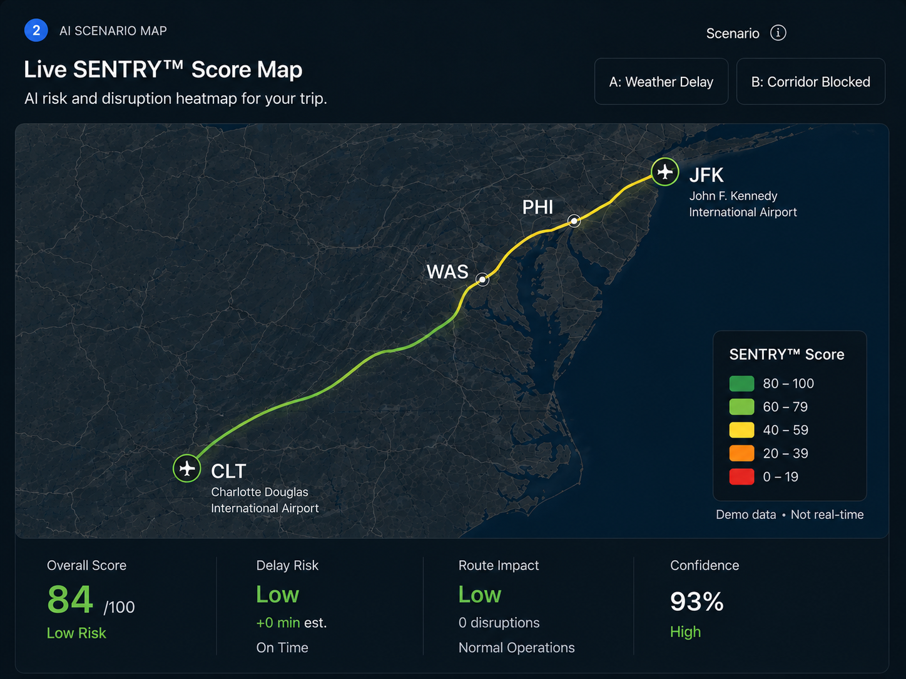

1 Trip Input
Trip Details & Preferences
Define your trip parameters and preferences.
⌁
✈
▣
◷
♙
▤
⌁
◈
3 AI Recommendations
AI-Recommended Solutions
Smart solutions to minimize risk and save time.
2 Simulated Disruption Scenarios
Live SENTRY™ Score Map
Demonstrates how SENTINEL detects anomalies, predicts downstream impacts, and automatically re-orchestrates travel continuity.
Scenarioi

4 Airport Intel
TSA Wait Times
Demo TSA wait-time intelligence. Values are seeded for presentation stability and react to the selected scenario.
△
Scenario: Baseline
TSA buffer reflects normal airport operations.
Recommended TSA Buffer+0 min
5 ETAS Mobility Tier
AI Mobility Tier Selector
Get a mobility tier recommendation with rationale.
Recommended Tier Best Fit
GÖ BIZZ
Business-class executive mobility for meetings, client travel, and presentation-forward movement.